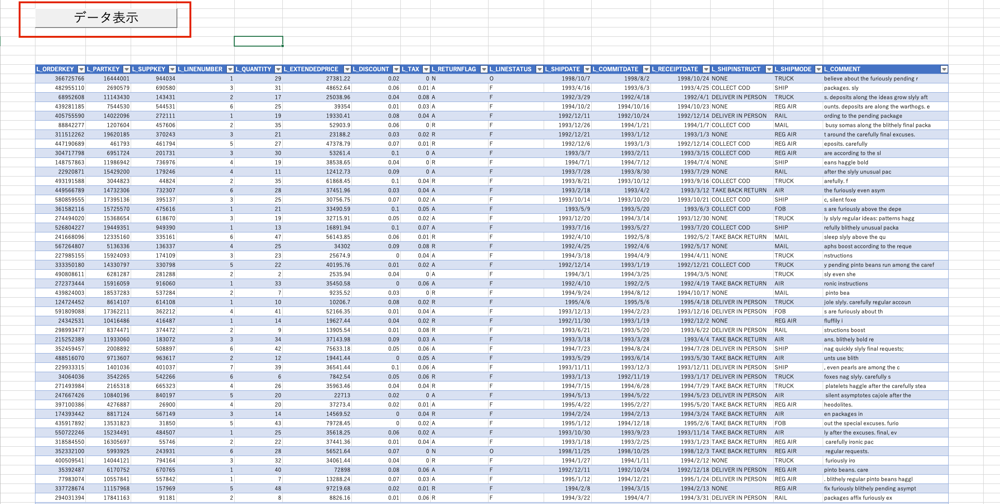

ExcelからODBC経由でSQLを実行するマクロ
前回の記事で実施した接続初期設定 自体は完了しているという前提。 約10年振りのExcelマクロ。お試し用のメモです。M1 MacからSnowflakeへExcelで接続し、SQLを実行するマクロと実行ボタンを作成する QueryTableオブジェクトを使用するので、下記URLを参考に。
Sub 更新()
Dim uList As ListObject
Dim uSQL As String
Set uList = ActiveSheet.ListObjects("テーブル_ExternalData_1")
'ランダムに100行取得するSQLサンプルクエリ
uSQL = "select * from testdb.public.LINEITEM_SMALL ORDER BY RANDOM() limit 100;"
With uList.QueryTable
.CommandText = uSQL
.AdjustColumnWidth = True '列幅を調整する
.Refresh BackgroundQuery:=False$$
End With
End Sub
データ表示ボタンを用意して、上記のスクリプトが実行されるように設定する。 
実行時間の簡易計測
limitの数値を変えてから計測を実施。
対象テーブル定義
CREATE OR replace TABLE LINEITEM_SMALL AS
SELECT
*
FROM
SNOWFLAKE_SAMPLE_DATA.TPCH_SF100.LINEITEM
LIMIT
100000000;
計測用のVBA
Sub 更新()
Dim start_time As Double
Dim fin_time As Double
start_time = Timer
Dim uList As ListObject
Dim uSQL As String
'******************ここから処理を記入*******************
Set uList = ActiveSheet.ListObjects("テーブル_ExternalData_1")
uSQL = "select * from testdb.public.LINEITEM_SMALL ORDER BY RANDOM() limit 100000;"
With uList.QueryTable
.CommandText = uSQL
.AdjustColumnWidth = False '列幅を調整する
.Refresh BackgroundQuery:=False
End With
'******************ここまで*******************
fin_time = Timer
MsgBox "経過時間：" & fin_time - start_time
End Sub
実行時間
| 取得件数 | VBA実行時間 | Query Profile |
|---|---|---|
| 100 | 2.38 秒 | 1.7 秒 |
| 1,000 | 2.57 秒 | 1.8 秒 |
| 10,000 | 3.42 秒 | 2.2 秒 |
| 100,000 | 8.39 秒 | 5.4 秒 |
| 1,000,000 | 28.72 秒 | 20 秒 |
| 10,000,000 | 130.85 秒 | 119 秒 |
※なお、Excelの最大行数が1,048,576のため、全行は表示出来ていない。